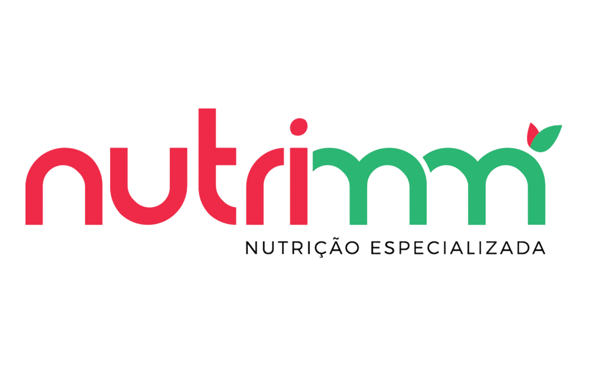

Nutrição Comportamental
Abordagem inovadora que foca na mudança da sua relação com a comida. Técnicas de Comer Intuitivo e Atenção Plena.

Cuide da sua saúde com dicas e informações sobre alimentação saudável.
Oferecemos um atendimento amplo e diferenciado. Conheça as áreas em que podemos ajudar você a alcançar seus objetivos:
Abordagem inovadora que foca na mudança da sua relação com a comida. Técnicas de Comer Intuitivo e Atenção Plena.
Plano alimentar individualizado respeitando a sua rotina para um emagrecimento sustentável e seguro.
Análise completa do estado nutricional, verificação de percentual de gordura, IMC e dobras cutâneas.
Otimização da ingestão de nutrientes para performance, saúde e estética de praticantes de atividades físicas.
Padrões alimentares propícios para o crescimento e um novo olhar para alimentos anteriormente recusados.
Foco na longevidade e qualidade de vida, prevenindo e controlando doenças crônicas através da dieta.
Uso de alimentos funcionais para reduzir acne, flacidez e celulite. Saúde que se reflete na pele e cabelo.
Controle especializado de colesterol e triglicerídeos para proteção da sua saúde cardiovascular.
Exame de alta tecnologia para análise de massa muscular, gordura e metabolismo basal.